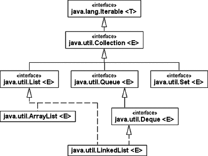
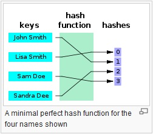
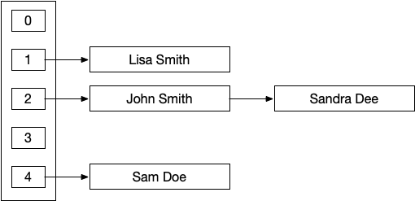

{% extends "../_base_template.html" %}
{% block title %}Lektion 14 - Collections API{% endblock %}

{% block sections %}
<section data-markdown>
<textarea data-template>
<i class="fas fa-graduation-cap"></i> Map, Set am Beispiel von HashMap, HashSet
=============================

**Ziele:**

* Sie kennen die Schnittstellen der Collections API (List, Set, Map) und deren konkreten Implementierungen
* Sie kennen die Anwendungen von List, Set, Map
* Sie können ArrayList, LinkedList, HashMap, HashSet in Java anwenden und sie zweckdienlich in eigenen Programmen einsetzen
</textarea>
</section>

<section data-markdown>
<textarea data-template>
<i class="fas fa-graduation-cap"></i> Datentypen in Java - Collections API
=============================

Java bietet mit dem Collections API eine Sammlung von grundlegenden "Container"-Datentypen.
Ein paar wenige davon kennen wir schon:

* das Interface *List* mit ArrayList / Linked List als Implementierungen

**UML**

Die Collections API bietet noch viel mehr (kleiner Ausschnitt aus der API-Struktur):


</textarea>
</section>

<section data-markdown>
<textarea data-template>
<i class="fas fa-graduation-cap"></i> Basis-Container-Interfaces
=============================

Die folgenden Interfaces definieren die "Funktionalität" der API, aber noch *keine konkrete Implementation*.
Die Interfaces lassen sich in *4 Typen* einteilen:

* Interface **List**: Das List-Interface erweitert die Collections-Schnittstelle, um geordnete Listen abbilden zu können.
  Auf Elemente der Liste lässt sich über einen ganzzahlingen Index zugreifen, und es kann linear nach Elementen gesucht werden.
  Doppelte Elemente sind erlaubt, auch beliebig viele null-Einträge.
* Interface **Set**: Eine Menge von Objekten. Ein Set ist eine im mathematischen Sinn definierte Menge von Objekten. Wie von mathematischen Mengen bekannt, darf ein Set keine doppelten Elemente enthalten.
* Interface **Map**: Eine Datenstruktur, die einen Schlüssel (engl.: Key) mit einem Wert (engl.: Value) verbindet, heisst Assoziativspeicher.
* Interface **Queue**: Eine Queue arbeitet nach dem FIFO-Prinzip (First In, First Out): Zuerst eingefügte Elemente werden zuerst wieder ausgegeben (Anders als beim Stack).

Wir schauen uns heute **Sets** und **Maps** genauer an.

</textarea>
</section>

<section data-markdown>
<textarea data-template>
<i class="fas fa-graduation-cap"></i> Sets und Maps
=============================

Set
----

Ein "Set" kennen Sie von der Mengenlehre in der Mathematik: In einem **Set** können
eindeutige Elemente gespeichert werden: Jedes eindeutige Element kommt in einem Set nur 1x vor.

Anwendungs-Beispiele?

<ul class="fragment">
    <li>Listen ohne Duplikate</li>
    <li>Mitglieder eines Vereins (sind eindeutig)</li>
    <li>Zählen / Erfassen von (Tier-)Arten ...</li>
    <li>...</li>
</ul>

Map
----

Eine "Map" ist ähnlich wie ein Set, jedoch haben wir es hier mit Einträgen zu tun, die wir einem
eindeutigen **Schlüssel** zuordnen: Ein Element in einer Map kann also anhand eines **eindeutigen Schlüssels**
in der Map gespeichert / abgefragt werden.

Anwendungs-Beispiele?

<ul class="fragment">
    <li>Zugriff auf Elemente anhand eines Schlüssels</li>
    <li>Suchindex: z.B. anhand Telefonnummer die Adresse finden</li>
    <li>Speichern von Attribut-Werten (Attribut-Name: Schlüssel, Attribut-Wert: Inhalt)</li>
    <li>...</li>
</ul>

</textarea>
</section>

<section data-markdown>
<textarea data-template>
<i class="fas fa-graduation-cap"></i> Konkrete Implementierungen
=============================

Die Interfaces **Set** und **Map** werden von konkreten Klassen implementiert. Je nach Anwendungsfall kann sich der Programmierer
für eine bestimmte konkrete Implementierung entscheiden.

Folgende Implementierungen zu *Sets* und *Maps* sind für uns von Bedeutung:

**Mengen (Sets)**:

Klasse       | Beschreibung
-------------|-----------------------
HashSet    | Eine Implementierung der Schnittstelle Set durch ein schnelles Hash-Verfahren
TreeSet   | Eine Implementierung von Set durch einen Baum, der alle Elemente sortiert hält
LinkedHashSet   | Eine schnelle Mengen-Implementierung, welche sich auch die Reihenfolge der eingefügten Elemente merkt

**Assoziativspeicher (Maps)**:

Klasse       | Beschreibung
-------------|-----------------------
HashMap    | Implementiert einen Assoziativspeicher durch ein Hash-Verfahren
TreeMap   | Exemplare dieser Implementierung halten ihre Elemente in einem Binärbaum sortiert.
LinkedHashMap   | Eine schnelle Map-Implementierung, welche sich auch die Reihenfolge der eingefügten Elemente merkt
WeakHashMap   | Verwaltet Elemente mit "schwachen Referenzen", sodass die Laufzeitumgebung bei Speicherknappheit Elemente entfernen kann (z.B. für Caches)

<i class="far fa-hand-point-right"></i> Wir schauen uns die konkreten Implementierungen **HashSet** und **HashMap** genauer an.

</textarea>
</section>
<section data-markdown>
<textarea data-template>
<i class="fas fa-graduation-cap"></i> Wann verwenden Sie welche Collection?
=============================

* Ist eine **feste Sequenz**, also eine Ordnung, gefordert? Dann nimm eine Liste
  * Soll ein schneller Zugriff über einen Index erfolgen? Dann ist `ArrayList` gegenüber `LinkedList` im Vorteil
  * Werden oft am Anfang/Ende neue Elemente eingefügt / entfernt? Dann nimm eine `LinkedList`
* Wenn die Reihenfolge keine Rolle spielt, aber schnell geprüft werden soll, ob **ein Element Teil einer Menge ist**,
  punktet `HashSet`
* Sollen Elemente nur einmal vorkommen, und immer sortiert bleiben? Dann ist `TreeSet` eine gute Wahl.
* Muss es eine Assoziation zwischen einem Schlüssel und Element geben, ist eine `Map` das Tool der Wahl.
</textarea>
</section>

<section data-markdown>
<textarea data-template>
<i class="fas fa-graduation-cap"></i> HashSet vs HashMap
=============================

Wir schauen uns zwei häufig verwendete konkrete Collections an:

* HashSet (Menge mit eindeutigen Elementen)
* HashMap (Assoziativspeicher)

Beide Klassen müssen Elemente eindeutig und vor allem schnell identifizieren können: Das Set muss prüfen, ob ein Element
bereits Teil der Menge ist, während die Map prüfen muss, ob der *Schlüssel* bereits Teil der Menge ist.

Mit einer herkömlichen Liste / Array wäre dies sehr ineffizient:

```java
List<String> personen = ladeStudenten();
if (personen.contains("Müller")) {
    ....
}
```

Hier kommt HashMap / HashSet ins Spiel: Wir wollen *schnell* feststellen, ob ein Element Teil der Menge ist.

Als "Tool" für die Eindeutigkeit (Set: Element, Map: Schlüssel) wird ein so genannter *Hash* errechnet. Dazu müssen wir aber wissen,
was ein Hash ist.

Wer kann den Begriff "Hash", resp. "Hashfunktion" erklären?
</textarea>
</section>

<section data-markdown>
<textarea data-template>
<i class="fas fa-graduation-cap"></i> Hashing
=============================

> Eine Hashfunktion (auch Streuwertfunktion) ist eine Abbildung, die eine große Eingabemenge (die Schlüssel) auf eine kleinere Zielmenge (die Hashwerte) abbildet.

Quelle: https://de.wikipedia.org/wiki/Hashfunktion

In der Informatik bedeutet dies: Aus einem Objekt (beliebigen Ihhalts) wird eine Integer-Zahl errechnet: Jedes Objekt ist durch diese Integer-Zahl identifizierbar:



</textarea>
</section>

<section data-markdown>
<textarea data-template>
<i class="fas fa-graduation-cap"></i> Hashing
=============================

Die Hash-Funktion soll:

* Immer eine Nummer für ein Objekt zurückgeben
* 2 gleiche Objekte (unterschiedlicher Instanzen) sollen immer dieselbe Nummer zurückgeben
* ... 2 ungleiche Objekte haben aber nicht immer eine andere Nummer! Hoppla! Da die Zielmenge kleiner ist als die
  Ausgangsmenge, sind **Kollissionen** vorprogrammiert:


</textarea>
</section>

<section data-markdown>
<textarea data-template>
<i class="fas fa-graduation-cap"></i> Hashing - Umsetzung in Java
=============================

In Java wird von Object die `hashCode()`-Funktion vordefiniert. Alle Objekte implementieren diese (unterschiedlich),
und Sie können die Methode in eigenen Objekten selber implementieren.

Probieren Sie folgende Code-Stückchen aus (https://repl.it/languages/java10): Was sind die Ergebnisse?

```java
Integer obj1 = new Integer(2018);
String obj2 = new String("2018");
System.out.println("Hash-Code von Objekt 1: " + obj1.hashCode());
System.out.println("Hash-Code von Objekt 2: " + obj2.hashCode());
```

```java
String obj3 = "AaAa";
String obj4 = "BBBB";
System.out.println("Hash-Code von Objekt 3: " + obj3.hashCode());
System.out.println("Hash-Code von Objekt 4: " + obj4.hashCode());
```

`hashCode()` kann von Klassen selber implementiert werden. Wir schauen uns die Berechnung des Hash anhand der
`String()`-Klasse an:

**Beispiel Hash-Code von String**

<code>h(s) = s.charAt(0)\*31<sup>n-1</sup> + s.charAt(1)\*31<sup>n-2</sup> + ... +   charAt(n-1)</code><br />(n ist die Länge des Strings s)

** Beispiel: s = "BBBB" **

Der Ascii-Code von B ist 66 (siehe http://asciitable.com/):

<code>h(s) = 66\*31<sup>3</sup> + 66\*31<sup>2</sup> + 66\*31<sup>1</sup> + 66<br />
    =  1966206 + 63426 + 2046 + 66 = 2031744</code>
</textarea>
</section>

<section data-markdown>
<textarea data-template>
<i class="fas fa-graduation-cap"></i> Hashing - Behandeln von Kollisionen
=============================

Kollisionen  können also prinzipbedingt auftreten - Damit müssen wir aber umgehen können.

Eine mögliche Lösung (wie sie in der Praxis auch angewendet wird):

Wir bauen aus den kollidierenden Elementen eine Linked List:



**Typisches Beispiel aus dem richtigen Leben**:

Wörterbuch: Bei einem Wörterbuch haben Sie eine "Index" (Buchstaben A-Z). Zu jedem
Index aber gibt es sehr viele Wörter, welche Sie jeweils als Liste unter dem Buchstaben finden.

<i class="far fa-hand-point-right"></i> So finden Sie schnell den Anfangsbuchstaben, müssen
dann aber die Liste (z.B. für "A") durchsuchen, bis Sie beim richtigen Wort sind.

Dies wäre eine typische Anwendung für eine **HashMap**.

</textarea>
</section>

<section data-markdown>
<textarea data-template>
<i class="fas fa-graduation-cap"></i> Umsetzung - Sets
=============================


**Idee**

* Interface: **java.util.Set**
* Designidee: Abbildung von Mengen aus der Mathematik (ohne doppelte Elemente)

** Konsequenzen **

* keine Reihenfolge
* Elemente sind einzigartig
* Beim doppelten Hinzufügen von Elementen wird das schon vorhandene Element **NICHT** überschrieben!

** konkrete Implementationen **

* `java.util.HashSet`
* `java.util.TreeSet`

** Java-Methoden **

```java
public boolean isEmpty()       // ist das Set leer?
public Iterator<E> iterator()  // Das "Durchlauf"-Objekt, der Iterator
public boolean add(E e)        // Element hinzufügen: Rückgabewert: true wenn OK, false wenn schon vorhanden
public boolean remove(E e)     // Element entfernen: Rückgabewert: hats geklappt?
public boolean contains(Object e)   // Entält das Set das Objekt?
```

</textarea>
</section>

<section data-markdown>
<textarea data-template>
<i class="fas fa-graduation-cap"></i> Umsetzung - Sets
=============================

** Java-Anwendung **

```java
// Hash-Set befüllen:
Set<String> set1 = new HashSet<>(); // neues Set vom konkreten Typ HashSet instanzieren
set1.add("Hallo");
set1.add("Welt!");
set1.add("Welt!"); // wird nicht nochmals eingefügt!

// Hash-Set durchlaufen / abfragen:
// Sets können nur über einen Iterator durchlaufen werden:

// Iterator anfordern:
Iterator<String> it = set1.iterator();

// HashSet wird mit dem Iterator durchlaufen:
while (it.hasNext()) {
    // next() gibt das aktuelle Element zurück und springt zum nächsten
    String s = it.next();
    // Ausgabe des aktuellen Elements
    System.out.println(s);
}
```
</textarea>
</section>

<section data-markdown>
<textarea data-template>
<i class="fas fa-flask"></i> Übungen - Sets
=============================

* Übungen / Beispiele liegen auf Moodle
* Debuggen / Ausprobieren / Ergänzen

</textarea>
</section>

<section data-markdown>
<textarea data-template>
<i class="fas fa-graduation-cap"></i> Umsetzung - Maps
=============================


**Idee**

* Interface: **java.util.Map**
* Designidee: Strukturiertes Ablegen von Elementen anhand eines Schlüssels (Key/Value, Assoziativspeicher)

** Konsequenzen **

* Jeder Schlüssel ist eindeutig (nicht das Element)
* Beim doppelten Hinzufügen von Elementen mit gleichem Schlüssel wird das schon vorhandene Element **überschrieben**!

** konkrete Implementationen **

* `java.util.HashMap`
* `java.util.TreeMap`

** Java-Methoden **

```java
public boolean isEmpty()       // ist die Map leer?
public V put(K key, V value)   // Wert hinzufügen
public V remove (K key)        // Wert anhand des Schlüssels entfernen
public Collection<V> values()  // alle Werte als Collection
public V get(K key)            // Einen Wert anhand des Schlüssels auslesen
public boolean containsKey(Object o) // hat die Map den Key gespeichert?
public boolean containsValue(Object o) // hat die Map die Value gespeichert?
```

</textarea>
</section>

<section data-markdown>
<textarea data-template>
<i class="fas fa-graduation-cap"></i> Beispiel - Map
=============================

** Beispiel: Stundeten-Verwaltung **

Wir haben folgende Studentendaten:

Schlüssel (Key) | Wert (Value)
----------------|--------------------
12345           | Student{name: Skywalker, vorname: Luke, Matrikel-Nr: 12345}
12355           | Student{name: Skywalker, vorname: Anakin, Matrikel-Nr: 12355}

** Java-Anwendung **

```java
import java.util.HashMap;
import java.util.Map;

public class HashMapTest {

	public static void main(String[] args) {
		Map<Integer, Student> map = new HashMap<>();

		// Drei Objekte der Klasse Student werden erzeugt:
		Student s1 = new Student("Skywalker", "Luke", 12345);
		Student s2 = new Student("Skywalker", "Anakin", 12355);
		Student s3 = new Student("Vader", "Darth", 12355);

		// Einfügen der Objekte in die HashMap
		// Matrikelnummer wird als Key eingegragen:
		map.put(s1.getMatrikelNr(), s1);
		map.put(s2.getMatrikelNr(), s2);

		// Student s1 wird duch s3 ersetzt, da der hash-Code der Matrikelnummer
		// bereits vorhanden ist.
		map.put(s3.getMatrikelNr(), s3);
	}
}
```
</textarea>
</section>

<section data-markdown>
<textarea data-template>
<i class="fas fa-flask"></i> Übungen - Maps
=============================

* Übungen / Beispiele liegen auf Moodle
* Debuggen / Ausprobieren / Ergänzen

</textarea>
</section>
 {% endblock %}
